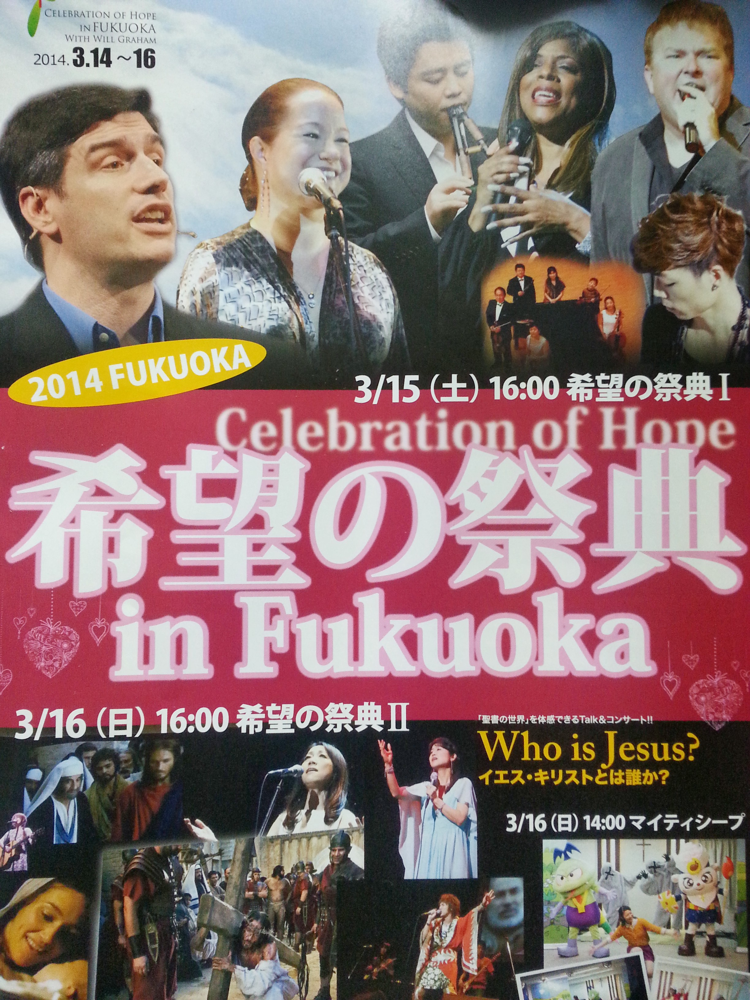

Ini pertama kalinya kami mengikuti acara KKR (Kebaktian Kebangunan Rohani) selama di Jepang. Jadi ketika minggu lalu kami diberitahu mengenai kegiatan ini oleh Mrs. Sharonette Bowman, istri Pastor kami di Gereja Lutheran Kumamoto, kami sangat antusias.
Bersama teman-teman KKI (Komunitas Kristen Indonesia) Kumamoto, kami sepakat untuk berangkat ke Fukuoka dengan menyewa minibus. Cuaca sangat cerah hari ini, temperatur mulai hangat di awal musim semi. Dengan total rombongan 9 orang, termasuk Aidan, kami berangkat dari Kumamoto jam 2:15 siang dan tiba di Fukuoka Kokusai Center jam 4:15. Gedung megah di kawasan pantai Fukuoka ini cukup terkenal karena sering dipakai untuk pertandingan Sumo.

Ketika kami tiba, acaranya sudah dimulai dengan pertunjukan musik rohani dari sebuah tim orkestra. Alunan lagu-lagu rohani yang mereka bawakan begitu indah dan sangat menggugah. Setelah itu, beberapa penampilan para penyanyi dan musisi tamu dari Billy Graham Foundation mengisi acara. Di penghujung acara, Rev.Will Graham, cucu dari evangelis tersohor Rev.Billy Graham, membawakan bible message dengan tema "Loneliness". Tema ini kelihatannya ingin menyorot kehidupan masyarakat Jepang yang cenderung individualistis dan introvert. Beliau masih muda, ganteng dan kelihatan sangat simpatik. Khotbah yang dibawakannya hanya kurang lebih 15 menit saja, tapi secara komprehensif menyentuh hampir semua dasar-dasar kekristenan. Acara ditutup dengan Altar Call dan doa penutup.
Setelah makan malam di Ramen Stadium, Fukuoka Canal City, kamipun pulang dengan hati puas dan penuh berkat. Sungguh sebuah perjalanan yang penuh kesan.